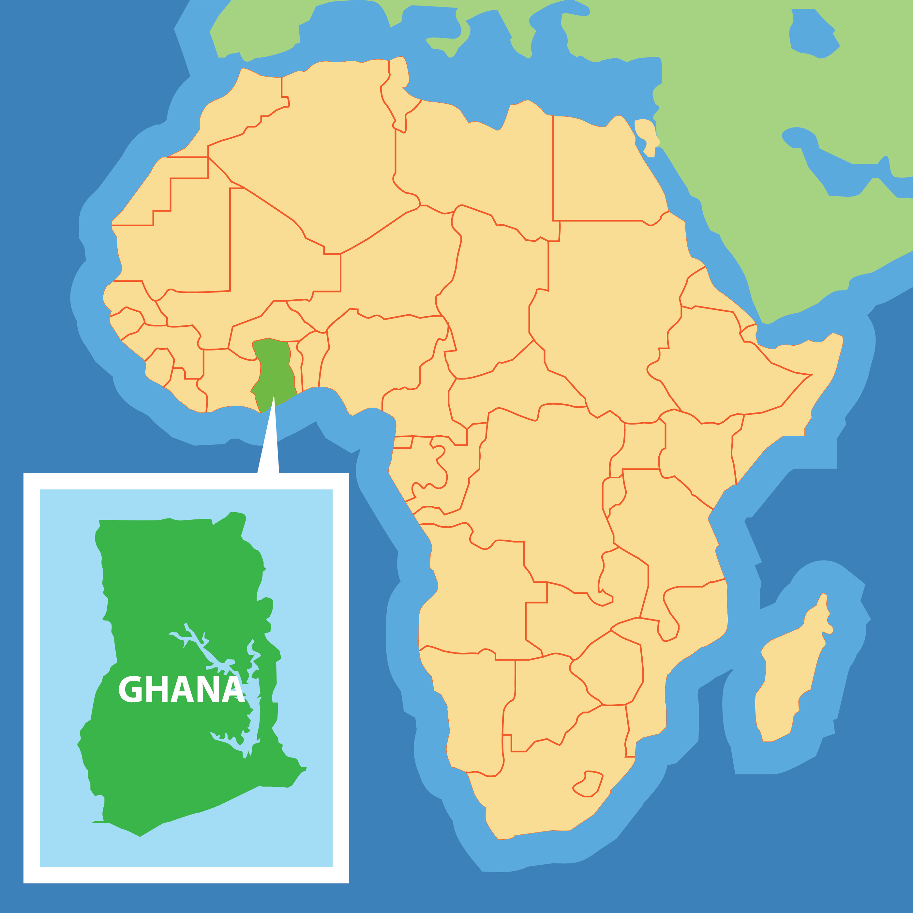

Jesse Seidu
Global Leadership Student from Ghana, West Africa
I am a student at Bob Jones University studying Global Leadership. I work at the BJU Press and am originally from Ghana in West Africa.
I attend Faith Baptist Church in Taylors, SC.
SPORTS & INTERESTS
I enjoy playing soccer, basketball, and volleyball. My favorite football club is FC Barcelona.
I love to play the keyboard and guitar, and I'm passionate about listening to music.
EDUCATION
Kwame Nkrumah University of Science and Technology (KNUST)
Bob Jones University
Global Leadership
WORK
BJU Press
Soccer
Basketball
Volleyball
Music
Guitar
Keyboard